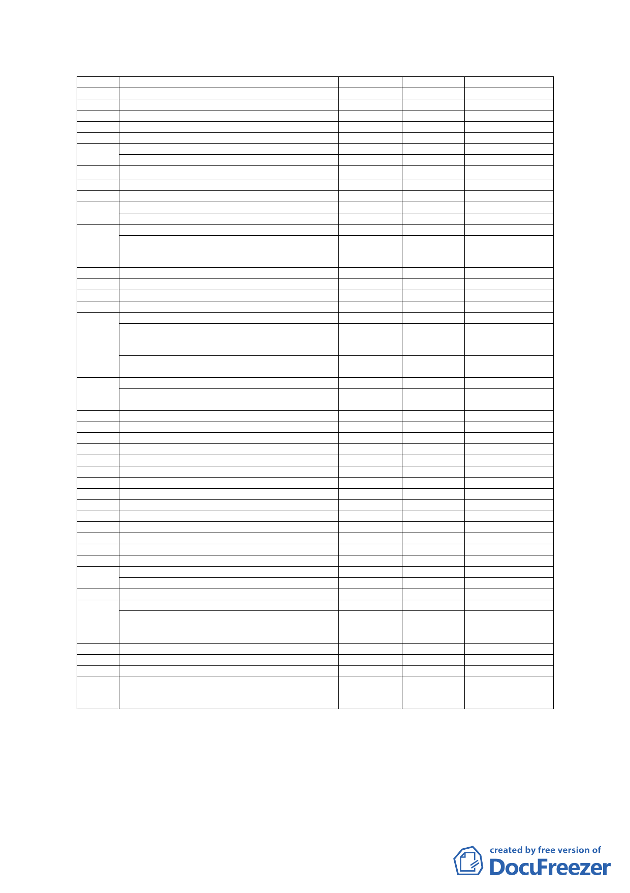

20 一般零售業乙組
21 飲食業
22 餐飲業
○
○□
○○
○
○
○
24 特種零售業甲組
25 特種零售業乙組
26 日常服務業
27 一般服務業(其他項)
（機車修理、汽車保養）
28 一般事務所
○
○
○
○○
○
○
○
29 自由職業事務所(文化藝術工作室)
30 金融保險業
○#
○○
○
○
31 修理服務業（其他項）
#
乙種汽車修理業
○
32 娛樂服務業（其他項）
戲院、劇院、劇場、樂隊業、電影院、錄影帶
節目帶播映業及視聽歌唱業、舞場、舞蹈表演
場、電腦網路遊戲
33 健身服務業（不含營業性浴室(含三溫暖)）
#
34 特種服務業
35 駕駛訓練場
36 殮葬服務業
37 旅遊及運輸服務業(其他項目)
○
貨櫃、貨運業辦事處，航空、海運、內河運輸
公司辦事處，報關行、快遞辦事處、船務代理
業
計程車客運業、小客車
租賃業車輛調度停放場
38 倉儲業(其他項目)
#
貨運、貨櫃貨運、航空運輸、報關、快遞等業
△
之車輛調度停放場及貨物提存場房
39 一般批發業
40 農產品批發業
41 一般旅館業
42 國際觀光旅館
43 攝影棚
#
#
○
#
△
△
#
△
○
#
○
#
○
44 宗祠及宗教建築
45 特殊病院
46 施工機料及廢料堆置或處理
47 容易妨害衛生之設施甲組
48 容易妨害衛生之設施乙組
49 農藝及園藝業
50 農業及農業建築
51 公害最輕微之工業
52 公害較輕微之工業
53 公害輕微之工業(其他項)
○○
○○
○○
(樂器製造業)
54 公害較重之工業
○○
○○
○
55 公害嚴重之工業(其他項目)
原料藥製造業、生物製劑製造業及因應製程改
□
變，經市政府認定無影響公共安全、衛生及違
反工業區之劃設目的者
56 危險性工業
策略性產業
□
企業營運總部及其關係企業
□
其他經本府產業發展局依「臺北市內湖輕工業
○
區輔導管理辦法」第四條第五款公告認可之產
業
□
□
□
○
□
註：1.○：允許使用。
2.△：依本市土地使用分區管制規則第三種工業區附條件允許使用。
3.＃：允許比照內湖科技園區次核心產業項目使用，相關回饋條件由本府另訂
4.□：比照內湖輕工業區輔導管理辦法附條件允許使用
-7-